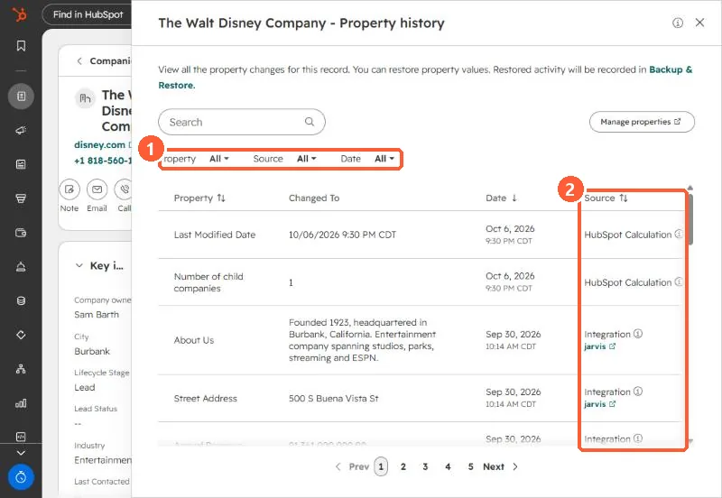

Short answer
Actions > View property history on a record lists every property change with the new value, date and source, such as an integration, workflow, import or HubSpot calculation. You can restore a value from a row when the source was a CRM UI edit, import or workflow. Restored activity is recorded in Backup & Restore. Workflow CRM property changes older than 14 days cannot be restored through the restore tool.
1. Open it
From the record's Actions menu, or from one property's history icon.


2. Read the source
In my demo portal, recent changes came from HubSpot Calculation and an Integration. The source tells you where to fix the cause, not just the value. HubSpot's change sources list covers imports, workflows, integrations, the mobile apps, scoring and more.
3. Restore
- Restore appears on rows whose source was a CRM UI edit, import or workflow.
- Workflow changes can be restored in bulk from the workflow, within 14 days.
- Older than that, export, find the old values, and re-import. See backups.